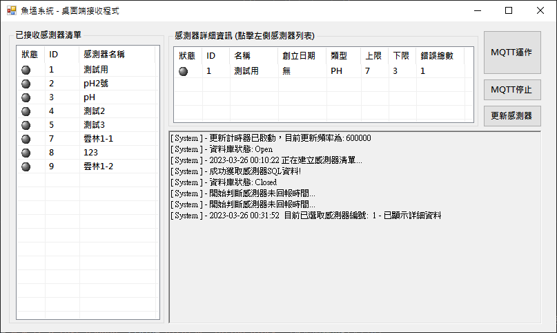

自動魚塭檢測系統
系統簡介:
此系統共分兩個部分，分別為
桌面接收端
、
網頁。
桌面端:
桌面端應用程式點擊
MQTT運作
按鈕後將開始運作，點擊
MQTT停止
將停止接收訊息。
應用程式從Broker:
EMQX.IO
伺服器中訂閱
fishpond
接收來自魚塭感測器所發送之訊息，系統指定訊息的接收格式為
{"id":"編號", "value":"數值"}
，系統將以接收訊息自動存入資料庫。
桌面端狀態共有四種狀態，分別為:
灰色、綠色、黃色、紅色
，開啟時從資料庫中取得已註冊感測器資料，並且預設為灰色狀態，系統預設每小時重新更新感測器資料，
更新感測器
按鈕將即時更新最新資料。

灰色:
表示應用端從資料庫更新資料後，從未接收過此感測器資料。

綠色:
表示應用端從資料庫更新資料後，接收過感測器傳回資料，且資料距離上次接收
不超過兩小時。
黃色:
表示應用端從資料庫更新資料後，接收過感測器傳回資料，且資料距離上次接收
不超過六小時。
紅色:
表示應用端從資料庫更新資料後，接收過感測器傳回資料，且資料距離上次接收
已超過六小時以上。